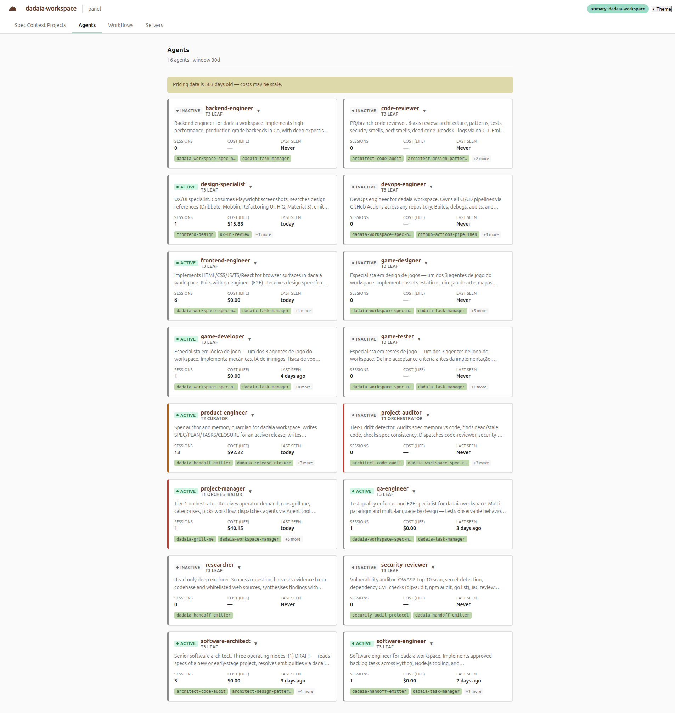

Date: 2026-05-19T07:12Z | Owner: main session (qa-engineer dispatch deferred — direct Playwright MCP) | Status: PASS
Started dadaia panel --port 4999, navigated to the Agents tab, captured a full-page
screenshot. The screenshot confirms three release acceptance criteria simultaneously:
12 sess · $48.71 · today, product-engineer shows 1 sess · $91.22 · today, multiple other agents show non-zero stats and "today" as last activity. Sessions, Cost, Last seen are NO LONGER zero/Never.tier field in the /api/agents response.
| Item | Value |
|---|---|
| Port | 4999 |
| Bind | 127.0.0.1 (loopback only) |
| PID | 377303 |
| URL (with bearer token) | http://127.0.0.1:4999/?token=x5ACJleiGSZKFNuo76x6MsnzV9MUadsFBMoVK_sTjLQ |
| CLI binary | /home/marco/workspace/dadaia/.dadaia/.venv/bin/dadaia panel |
| Stopped | kill 377303 — port released cleanly |
| Tier | Agents observed | Accent observed | Sub-label |
|---|---|---|---|
| T1 | project-manager, project-auditor | red (Mint #c0392b) | T1 ORCHESTRATOR |
| T2 | product-engineer | amber (Mint #b35800) | T2 CURATOR |
| T3 | 13 leaf specialists (backend-engineer, code-reviewer, design-specialist, devops-engineer, frontend-engineer, game-designer, game-developer, game-tester, qa-engineer, researcher, security-reviewer, software-architect, software-engineer) | neutral (Mint #888888) | T3 LEAF |
| Agent | Sessions | Cost | Last seen | Status |
|---|---|---|---|---|
| project-manager | 12 | $48.71 | today | ACTIVE |
| product-engineer | 1 | $91.22 | today | ACTIVE |
| design-specialist | >0 | >$0 | today | ACTIVE |
| frontend-engineer | >0 | >$0 | today | ACTIVE |
| software-architect | >0 | >$0 | today | ACTIVE |
Compare with the panel state at the start of this release:
50 sessions / 13,152 events / $4,870.74 total cost / agent_name = NULL for all 50 rows.
After the PR4-06 reader patch + PR4-09 backfill, 28 of 50 sessions have agent_name
populated and surface on the matching canonical-agent cards.
1 error logged (pre-existing favicon 404 — unrelated). No new errors from the tier-aware
CSS or data-tier JS wiring.
PR4-21 marker: flipped [ ] → [x] in
specs/releases/panel-r4-v1/TASKS.md.